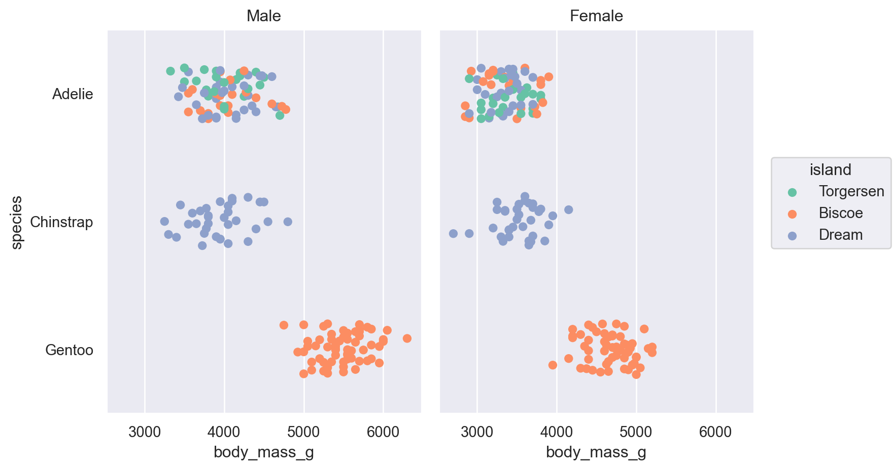
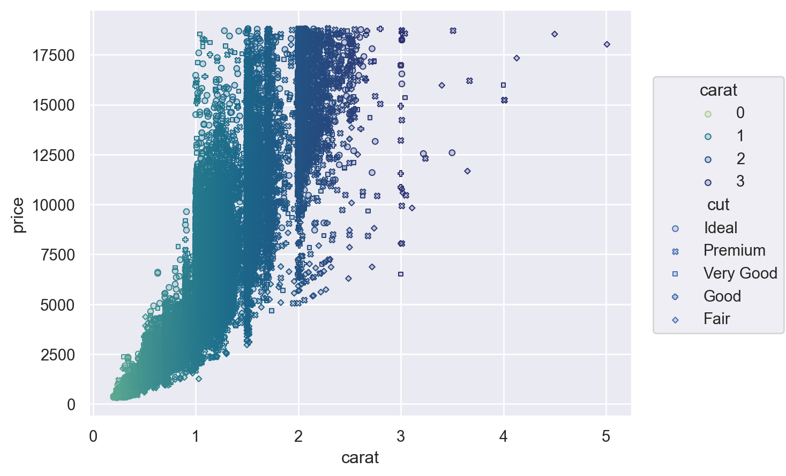
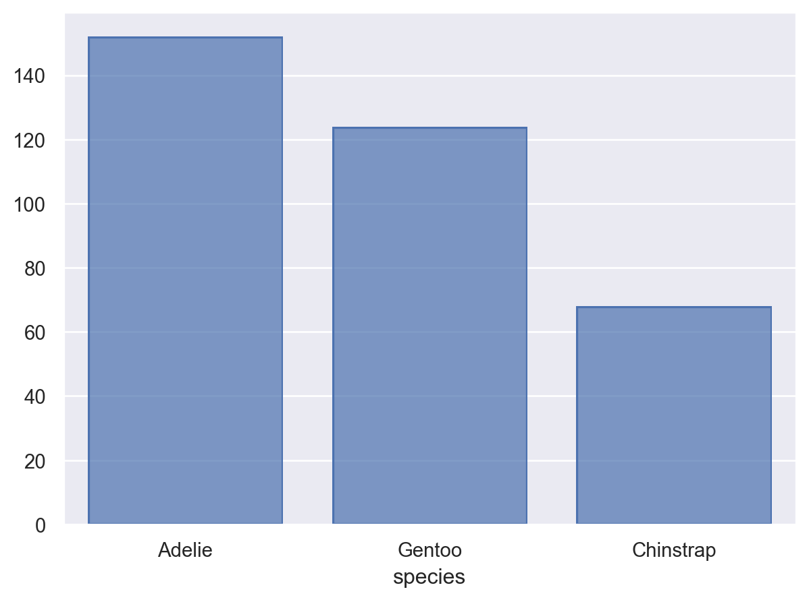
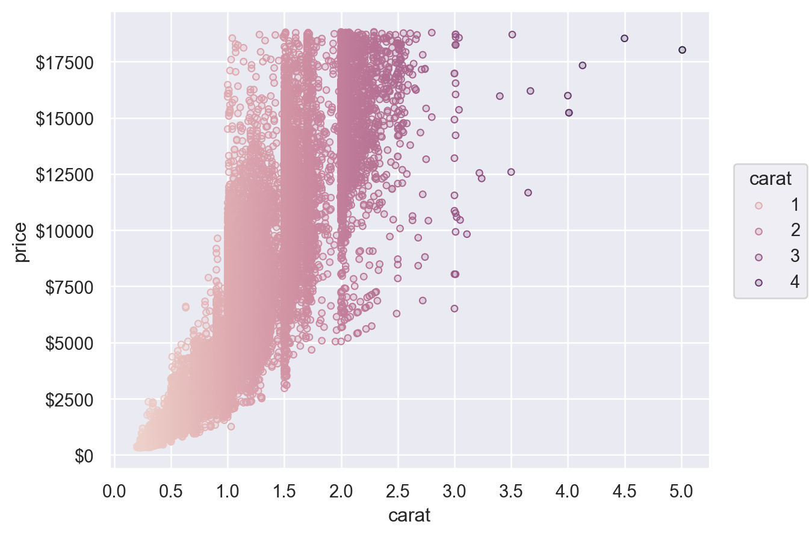
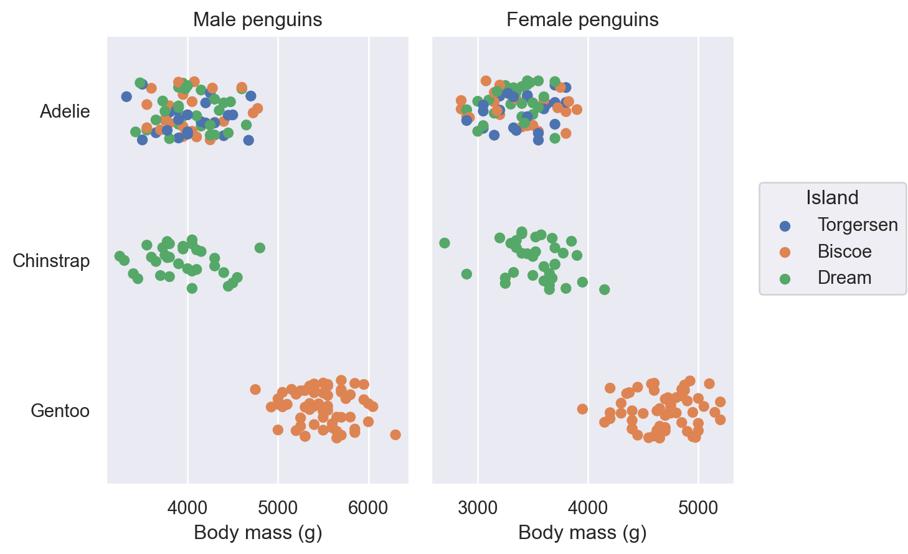
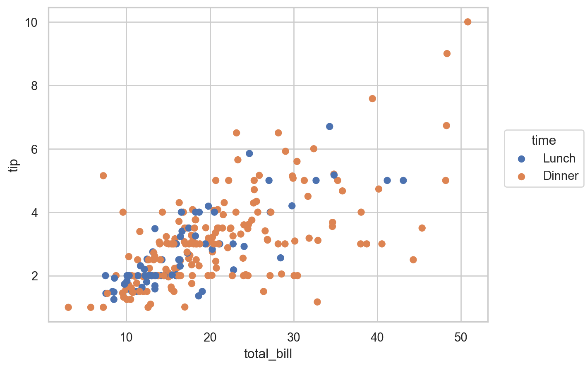
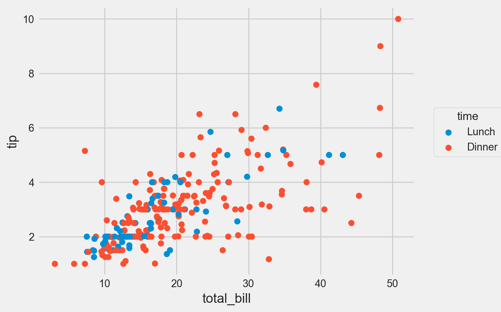
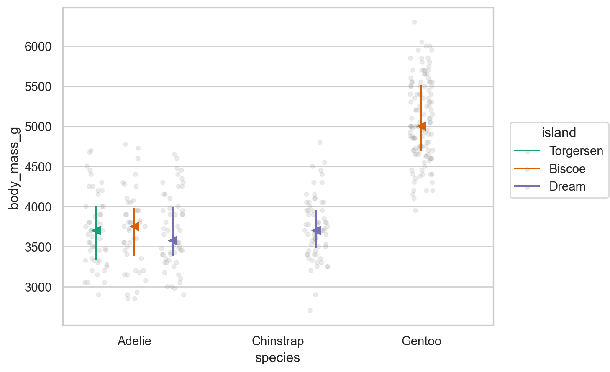

Load packages
# numerical calculation & data frames
import numpy as np
import pandas as pd
# visualization
import matplotlib.pyplot as plt
import seaborn as sns
import seaborn.objects as so
# statistics
import statsmodels.api as smseaborn
# numerical calculation & data frames
import numpy as np
import pandas as pd
# visualization
import matplotlib.pyplot as plt
import seaborn as sns
import seaborn.objects as so
# statistics
import statsmodels.api as smpenguins = sns.load_dataset("penguins")
(
so.Plot(penguins, x="body_mass_g", y="species", color="island")
.facet(col="sex")
.add(so.Dot(), so.Jitter(.5))
.scale(color="Set2") # color palettes: "Set2"
.layout(size=(8, 5)) # plot size
)
diamonds = sns.load_dataset("diamonds")
(
so.Plot(diamonds, x="carat", y="price", color="carat", marker="cut")
.add(so.Dots())
.scale(
color=so.Continuous("crest", norm=(0, 3), trans="sqrt"),
)
)
(
so.Plot(penguins, x="species")
.add(so.Bar(), so.Count())
.scale(x=so.Nominal(order=["Adelie", "Gentoo", "Chinstrap"])) # x축의 카테고리 순서를 변경
)
(
so.Plot(diamonds, x="carat", y="price", color="carat")
.add(so.Dots())
.scale(
x=so.Continuous().tick(every=0.5),
y=so.Continuous().label(like="${x:.0f}"), # %표시: like="{x:.1%}"
color=so.Continuous().tick(at=[1, 2, 3, 4]),
)
)
Plot has a number of methods for simple customization, including Plot.label(), Plot.limit(), and Plot.share():
penguins = sns.load_dataset("penguins")
(
so.Plot(penguins, x="body_mass_g", y="species", color="island")
.facet(col="sex")
.add(so.Dot(), so.Jitter(.5))
.share(x=False)
.limit(y=(2.5, -.5))
.label(
x="Body mass (g)", y="",
color=str.capitalize,
title="{} penguins".format,
)
)
tips = sns.load_dataset("tips")
p = (
so.Plot(tips, x="total_bill", y="tip", color="time")
.add(so.Dot())
)
p.theme({"axes.facecolor": "white",
"axes.edgecolor": "0.8",
'axes.spines.top': False,
'axes.spines.right': False})from seaborn import axes_style
p.theme({**axes_style("whitegrid")})
Seaborn: controlling figure aesthetics
from matplotlib import style
p.theme({**style.library["fivethirtyeight"]})
sbcustom.py로 working directory에 저장 또는 conda 환경 폴더에 저장
"""
Seaborn.objects statistical plotting custom functions.
boxplot, rangeplot
"""
import seaborn as sns
import seaborn.objects as so
def boxplot(df, x, y, color=None, alpha=0.1, marker="<"):
return (
so.Plot(df, x=x, y=y, color=color)
.add(so.Dots(alpha=alpha, color=".6"), so.Jitter(), so.Dodge())
.add(so.Range(), so.Est("median", errorbar=("pi", 50)), so.Dodge())
.add(so.Dot(pointsize=8, marker=marker), so.Agg("median"), so.Dodge())
.scale(color="Dark2")
.theme({**sns.axes_style("whitegrid")})
)
def rangeplot(df, x, y, color=None, alpha=0.1):
return (
so.Plot(df, x=x, y=y, color=color)
.add(so.Range(), so.Est("median", errorbar=("pi", 50)), so.Dodge())
.add(so.Dots(pointsize=8, marker="<"), so.Agg("median"), so.Dodge())
.scale(color="Dark2")
.theme({**sns.axes_style("whitegrid")})
)from sbcustom import boxplot, rangeplot
rangeplot(penguins, x="species", y="body_mass_g")
boxplot(penguins, x="species", y="body_mass_g", color="island")
Snippets: Configure User Snippets
"seaborn.obj": {
"prefix": "sbj",
"body": [
"(",
"\tso.Plot($1, x='$2', y='$3')",
"\t.add($0)",
")",
],
"description": "plot seaborn.objects"
},display()
.show() (pyplot으로 변환; 미진한 면이 있음)
p1 = rangeplot(penguins, x="species", y="body_mass_g")
p2 = boxplot(penguins, x="species", y="body_mass_g", color="island")
display(p1, p2) # from IPython.display import displayp1.show(); p2.show()